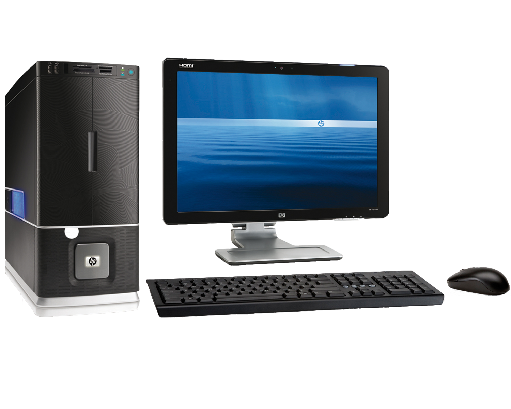

L'elemento <video> è stato introdotto di recente nell'html5, per questo è compatibile sono con i browser più recenti.
Per quanto riguarda i formati video di solito vengono utilizzati:
H264 per IE e Safari
WebM per Android, Chrome, Firefox e Opera
Ogni browser fornisce i suoi controlli per il player. Gli attributi utilizzati per questo tag sono i seguenti:
preload: Dice al browser cosa fare mentre carica la pagina, può assumere 3 valori.
none: Il browser non deve caricare il video finchè l'utente non clicca su play
auto: Il browser scarica il video durante il caricamento della pagina.
metadata: Il browser raccoglie dati sul video, dimensioni, primo frame, durata.
poster: Consente di specificare un'immagine di anteprima.
controls: Indica al browser di mostrare i suoi controlli per la gestione del video.
autoplay: Il file viene avviato automaticamente.
loop: La riproduzione del video dovrà ricominciare da capo terminata la riproduzione.
Per specificare il file, in più formati, da riprodurre si usa l'elemento <source> che presenta i seguenti attributi:
src: Specifica il percorso del video, si può anche inserire l'src nel tag video
type: Comunica al browser il formato del video, altrimenti dovrà scaricare una parte di video per vedere se è in grado di riprodurlo, porterebbe ad uno spreco di tempo.
Esempio di seguito:
Per incorporare un video da youtube invece basta cliccare su condividi/incorpora e prendere il codice Iframe
Il tag <audio>
Permette di riprodurre brani musicali, gli attributi che si utilizzano:
src: Specifica il percorso del file audio.
controls: Stessa cosa come nel tag video, comunica al browser di utilizzare i suoi controlli per la gestione del file.
autoplay: Riproduce automaticamente il brano.
preload: Quando non è impostato in autoplay si utilizzano gli stessi valori dell'attributo preload nel tag video.
Il tag <source> si utilizza per specificare molteplici file audio, serve per coprire i problemi di compatibilità dei browser. Esempio di seguito:
L'immagine mappata - Il tag <area>
Il tag area definisce un'area all'interno di un'immagine con cui è possibile interagire.
Per trovare le coordinate di un'immagine è possibile affidarsi a siti come questo.
Ecco un esempio:

L'immagine di background
Oltre ad un colore, è possibile dare un'immagine di background ai vari contenitori, come il body, o il div, tramite la proprietà css <background-image> Esempi a seguire:
Testo di prova
Le proprietà correlate sono le seguenti:
background-size: Definisce la grandezza dell'immagine di sfondo, può essere espressa in pixel o in percentuale, si possono scrivere, in questo ordine, "width height"
backgroun-attachment:
background-repeat: Può assumere il valore no-repeat per evitare che l'immagine si ripeta per colmare gli spazi vuoti del contenitore.
Questo argomento verrà ripreso durante lo studio del css.